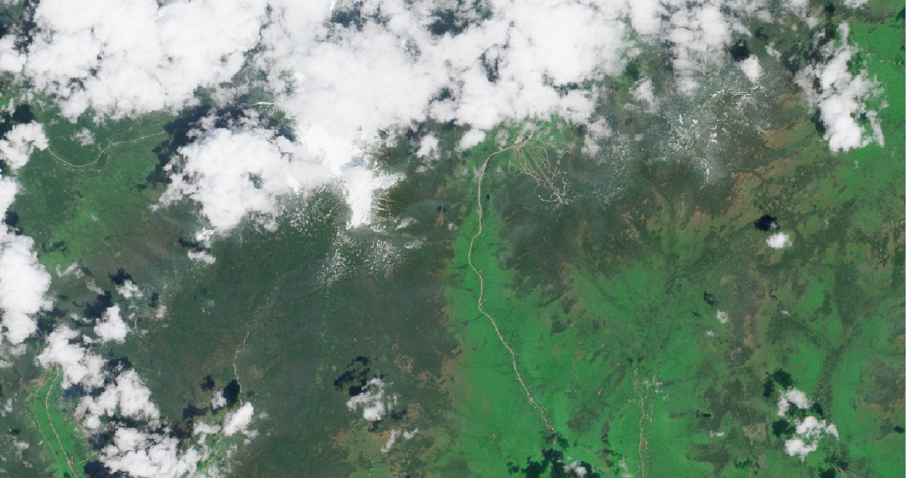

Explore the difference between a true-color Sentinel-2 satellite image and its corresponding land cover classification.
Drag the slider bar to reveal more of either the original satellite view or the classified land cover map.